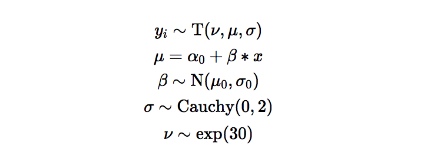

Interactive weight setting for mixture priors to stan models

The model estimates the difference in risk-taking behavior between the expansive and costrictive conditions. We estiamte the mean difference in the average number of pumps by a participant between the expansive and constrictive condition.